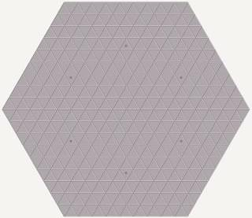
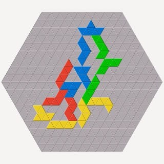

Trigon is another game variant. The rules a similar to game variant Classic but it uses a differently shaped board and set of pieces. Each colour uses 22 pieces that are shaped like the polyiamonds up to size six. (A polyiamond is a figure built by a number of equilateral triangles connected along the edges.)
The board also consists of triangles and is shaped like a hexagon with nine triangles building an edge.

There are six starting points on the board, each located four rows from the middle of an edge. The starting points are not coloured and the players may freely choose a starting point for the first piece of a colour.

Like in game variant Classic, Trigon can be played with two players by having one player play Blue and Red and the other player Yellow and Green.
Trigon can be played with three players using the same rules as for the four-player variant. The three-player variant is played on a smaller board with an edge size of eight triangles. The six starting points are located three rows from the middle of an edge.